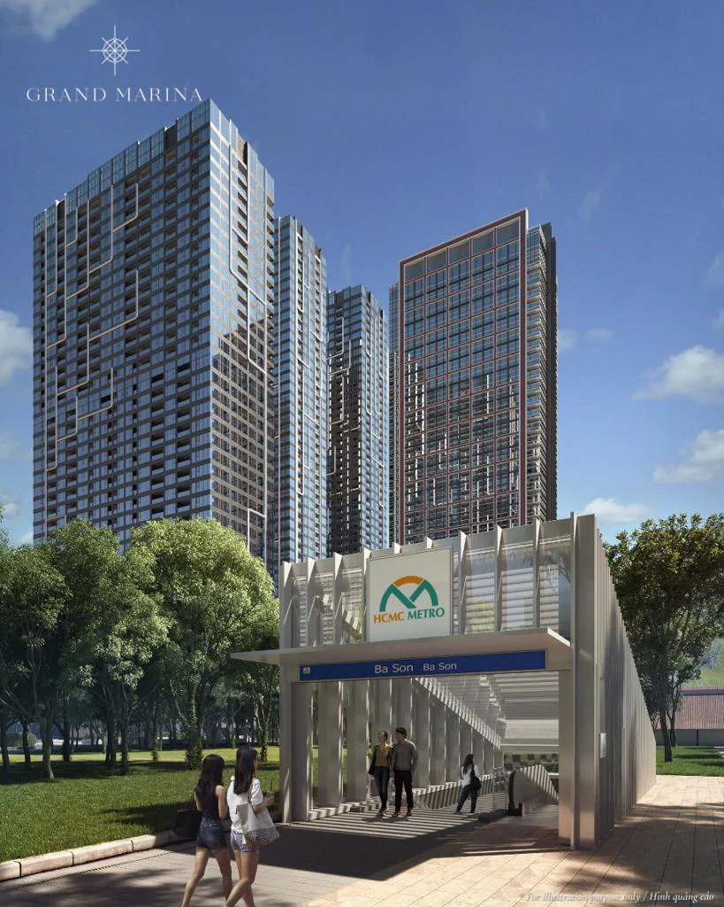

When a foreign buyer weighs a branded residence at Grand Marina Saigon (Ba Son, District 1, HCMC), the return calculation is not quite the same as it is for a Vietnamese buyer. Foreigners operate under a distinct legal framework — 50-year ownership, a cap of 30% of units per building, and a resale market that often targets the foreign-buyer pool. These three factors feed directly into the rental yield you can realistically achieve and the value you can recover on exit. This guide examines each factor in practical terms, grounded in project facts and market references, so you can decide with clear eyes.
Under what conditions can a foreigner own at Grand Marina?
Foreigners may own a Grand Marina apartment for 50 years, renewable under Vietnamese law, up to a cap of 30% of the units in any one building, with full rights to lease and transfer.
This is the standard legal framework for commercial residential projects in Vietnam, and Grand Marina is no exception. Where Vietnamese buyers receive a long-term pink book with full rights to use, transfer, lease and inherit, foreigners hold a 50-year ownership term. Crucially, the rights to lease and to transfer are preserved — and those two rights are the foundation for generating cash flow and for exiting later. Officetel units in the towers follow the same 50-year tenure.
If you are new to the market, read the conditions carefully before committing funds. All paperwork at Grand Marina is supported in bilingual form with translation, so foreign investors can fully understand the contract terms.

How does the 30% cap affect investment value?
The 30% cap limits how many units foreigners can buy in each building, creating a scarcity that may support value but also narrows the foreign-buyer pool available to you on resale.
The 30% cap is a double-edged factor every foreign investor needs to understand:
- The upside: the number of foreign-eligible "slots" in each building is finite. When demand is strong, that scarcity can support liquidity and pricing for the segment of units that may be sold to foreigners.
- The caveat: if you later want to sell to another foreigner, that buyer must also fit within the building's remaining 30% allocation. Once the cap is close to full, your pool of potential foreign buyers can shrink.
In practice this means you can still resell to a Vietnamese buyer (who is not bound by the cap) or to a foreigner if the building still has room. So timing and tower choice matter. Our team can check the remaining foreign allocation for you tower by tower — Lake, Lagoon, Cove, Sea — at the moment you are interested.
Want to know which tower still has foreign "room" and what today's pricing looks like? Message us for a real-time check.
Does 50-year ownership reduce rental yield?
The 50-year term has almost no effect on your annual rental cash flow, because tenants care about the quality of the apartment and the services, not the owner's tenure type.
Tenants — typically expatriate professionals, company executives and high-end families — choose a home based on location, operating brand and amenities, not on whether the landlord holds freehold or a 50-year title. At Grand Marina, the leasing advantage comes from very concrete features: a Saigon riverside setting, roughly 250 m from Ba Son metro station, Marriott-standard operations with 24/7 concierge, a Technogym fitness centre, a river-facing infinity pool, and fully fitted handover to a high standard (Poggenpohl/Boffi kitchens, Miele/Gaggenau appliances). These are exactly the things that make a unit easy to lease at a good rate.
As an indicative reference, rental yield at the project sits around 3.5–5% per year depending on unit type and timing; this figure can change with the market. For a deeper look at the assumptions behind it, see Grand Marina Saigon Rental Yield: The Real Numbers. If you want to optimise cash flow, the Dual-Key Units: A Two-Income Rental Play model lets you split a unit into two independently leasable zones.
Indicative yields by unit type, through a foreigner's lens
Indicative entry prices and rents per unit type let you estimate gross yield, but every figure is indicative and changes with each sales phase.
| Unit type | Indicative price (from) | Indicative rent / month | Indicative gross yield |
|---|---|---|---|
| 1 bedroom (~50–60 m²) | from ~20 billion VND | ~25–40 million VND | ~3.5–5% / yr |
| 2 bedroom (~70–90 m²) | from ~35 billion VND | ~40–70 million VND | ~3.5–5% / yr |
| 3 bedroom (~110–140 m²) | from ~60 billion VND | ~70–120 million VND | ~3.5–5% / yr |
The table only illustrates how to estimate gross yield (before fees). Investors should also factor in operating costs: a management fee of about 8–9 USD/m²/month (subsidised by the developer for the first three years), a 2% maintenance fee (one-off), 10% VAT and a 0.5% registration fee. For a smaller entry ticket, the Grand Marina Officetel: Lower Entry, What ROI? option is worth considering. All prices and areas can change by sales phase — please confirm via Zalo 0903 475 802.

Exit value: who you can resell to, and the brand premium
On exit, a foreigner can resell to a Vietnamese buyer (no cap) or to another foreigner within the 30% allocation, and the Marriott brand premium is an important pricing reference.
A common misconception is that foreigners can only sell to other foreigners. In reality you can transfer to a Vietnamese buyer — a group not bound by the 30% cap — so the buyer pool on exit is far wider than the initial worry suggests. That is a reassuring point for foreign investors.
On pricing, market research firms such as Knight Frank and Savills have noted (over 2023–2024) that branded residences are typically priced 25–35% above comparable non-branded products. This is a market reference, not a promise of returns — actual outcomes depend on the project, timing and policy. To understand why the brand factor carries this value, read What are branded residences?. You should also review the Pricing & payment page for the current payment options.
Risks to weigh before committing funds
The main risks are a tenure that counts down over time, a 30% cap that can narrow foreign buyers, and market volatility — all manageable if understood from the start.
- The 50-year clock: the remaining value of the ownership term decreases year by year; although the law allows renewal, investors should factor this in when planning their exit timing.
- The cap for foreign resale buyers: if a tower is near its 30% limit, the option to sell to a foreigner narrows — at which point Vietnamese buyers become the primary exit channel.
- Market and timeline volatility: prices, rents and liquidity all move with the cycle; no guaranteed return is promised.
The good news is that most of these risks can be managed by choosing the right tower, the right unit type and the right timing, and by reviewing the legal documents and the specific price list carefully before deciding. The advice in this article is general; you should weigh it against your own financial situation and seek professional counsel before committing funds.
Every foreign investor has a different risk appetite and goal — let us build a specific scenario for you.
Note
Prices, areas and timelines may change per the developer's official announcements. Please contact us on Zalo 0903 475 802 for the latest documents and price list.